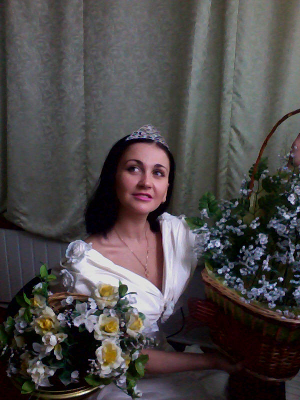
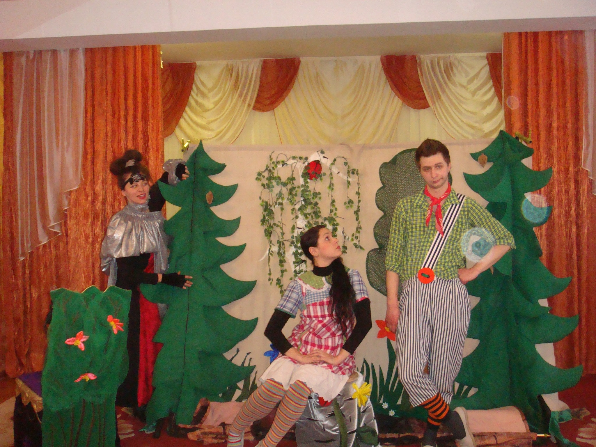
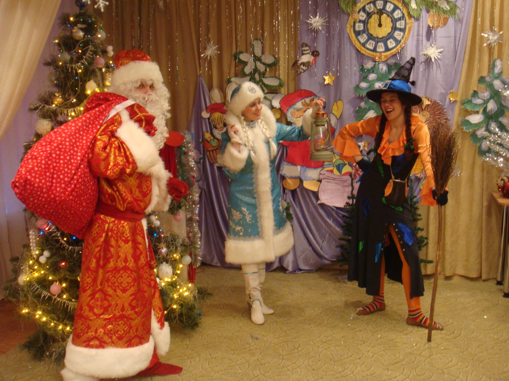
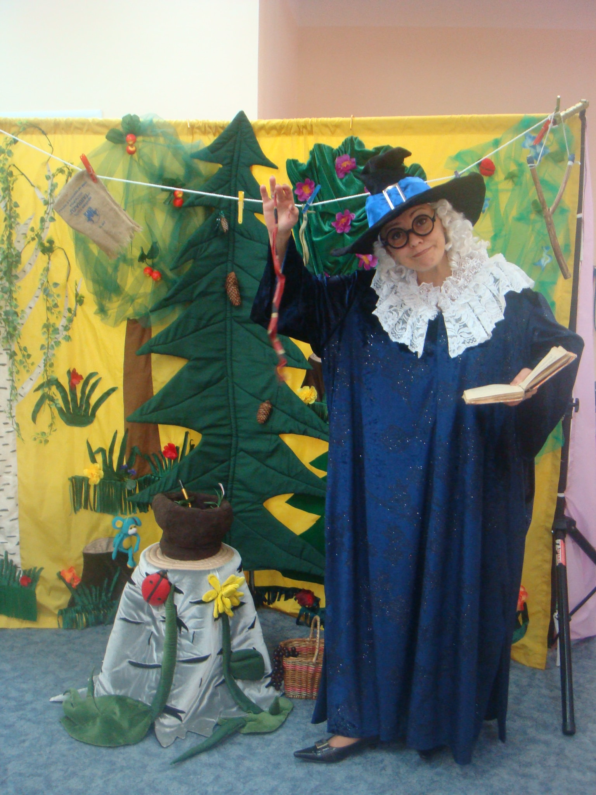

Заколдованное озеро

Постановка на одно действие для детей возрастом от 4 до 10 лет, язык - украинский или русский, продолжительность - 40-45 минут, режиссер - Бачинская Н. М.
Эта постановка в доступной форме раскрывает вопросы защиты окружающей среды, дружбы и взаимопомощи.
Ловушка для непослушных

Авторская постановка на одно действие для детей возрстом от 3.5 до 10 лет, язык - украинский или русский, продолжительность - 40-45 минут, режиссер - Бачинская Н. М. В постановке раскрывается тема ежедневного поведения ребенка, в доступной форме детям объясняется необходимость слушаться старших.
Золотой ребенок
Постановка по мотивам пьесы В. Орлова "Золотой цыпленок" на одно действие. Для детей возрастом от 3.5 до 10 лет, язык - украинский или русский, продолжительность - 40-45 минут, режиссер - Бачинская Н. М. Одна из самых популярных и актуальных пьес детских театров, которая раскрывает проблематику отношений между детьми и взрослыми.
Новогодние приключения

Авторская тематическая постановка на одно действие для детей возрстом от 3.5 до 10 лет, язык - украинский или русский, продолжительность - 40-45 минут, режиссер - Бачинская Н. М. Веселая встреча Нового года с конкурсами, шутками и подарками.
Принцесса и лесоруб

Веселая постановка на одно действие по мотивам народной сказки, для разных возрастных групп, язык - украинский или русский, продолжительность - 40-45 минут, режиссер - Бачинская Н. М.
Волшебные слова
Авторская тематическая постановка на одно действие для детей возрстом от 3.5 до 10 лет, язык - украинский или русский, продолжительность - 40-45 минут, режиссер - Бачинская Н. М. Детишкам в простой и доступной форме объясняется что такое вежливость.
Cокровищница знаний
Авторская тематическая постановка на одно действие для детей возрастом от 3.5 до 12 лет, язык - русский или украинский, продолжительность - 45 минут. Сокровища, которые всегда с вами.
Ульянка
Авторская постановка на одно действие по по мотивам народных сказок для детей возрастом до 12 лет, язык - русский или украинский, продолжительность - 45 минут. Сказочные приключение - в учебе помощь!
Мишкины приключения
Авторская веселая постановка на одно действие для детей возрастом от 4 до 12 лет, язык - украинский или русский, продолжительность - 40 минут, режиссер - Бачинская Н. М. Сказочные приключения Михаила и его медвежат.
Как у Ляны на лугу
Обучально-игровая постановка для детей возрастом до 13 лет. Благодаря своей универсальности может использоваться как обучнальный спектакль-игра на любую тематику, будет интересна как малышам, так и детям более страшего возраста.
Полезные советы
Авторская постановка на одно действие для детей возрастом от 4 до 11 лет, язык - украинский или русский, продолжительность - 40 минут, режиссер - Бачинская Н. М. По ходу постановки раскрываются вопросы ежедневной жизнедеятельности.
Настоящая сказка
постановка на одно действие для детей возрастом от 3.5 до 10 лет, язык - украинский или русский, продолжительность - 40-45 минут. Постановка в доступной форме раскрывает вопросы бережливого отношения к личным вещам.
Обучение Коськи
авторская постановка на одно действие для детей возрастом от 4 до 12 лет, язык - украинский или русский, продолжительность - 40-45 минут, режиссер - Бачинская Н. М. По ходу постановки раскрываются такие вопросы повседневной жизнедеятельности как правила дорожнего движения и пожарная безопасность.
Приключения привидения Еспера
Постановка на одно действие для детей возрастом от 3.5, язык - украинский или русский, продолжительность - 40-45 минут. В постановке раскрываются вопросы дружбы и взаимовыручки, может включать в себя разную тематику.
Иванко
Постановка на одно действие для детей возрастом от 3.5 лет, язык - украинский, продолжительность - 40-45 минут, по мотивам одноименной скази.
Капризная принцесса
Постановка на одно действие для детей возрастом от 4 лет, язык - украинский, продолжительность - 40-45 минут, по мотивам одноименной чешской скази.
Перезагрузка

Постановка на два акта по мотивам одоименного произведения Д. Лойджа. Продолжительность - 60-80 минут, возраст - от 14 лет, режиссер - Бачинская Н. М. В ходе постановки раскрываются вопросы, касающиеся темы компьютерной зависимости среди молодежи, в простой и доступной форме показаны способы нейтрализации ее негативных последствий.
Капиталист

Социально-сатирическая комедия на два акта по мотивам произведения И. Карпенка-Карого "Хазяин". Продолжительность - 60-80 минут, возраст - от 14 лет, режиссер - Бачинская Н. М. Скупость, доведенная до абсурда, отсутствие культуры и никчемное честолюбие - все это делает человека отвратительным и смешным.
Настоящие мечтатели
Постановка на два акта по мотивам одноименного произведения Н. М. Бачинской. Продолжительность - 60-80 минут, возраст - от 14 лет, режиссер - Бачинская Н. М. Все мы когда-то мечатли, мечтаем и будем мечтать и как хорошо, когда наши мечты сбываются ...но еще лучше, когда они сбываются именно так, как мы этого хотели.
Лабиринт судьбы
Постановка на одно действие по мотивам произведения С. Мальчика. Режиссер - С. Мальчик. Современная постановка про взаимоотношения детей и родителей. Старая тема актуальна всегда!
Это наш дом
Социальная постановка по мотивам одноименного произведения К. Корсика. Продолжительность - 70 минут, возраст - от 14 лет, режиссер - Бачинская Н. М., помощник - С. Мальчик. Постановка, которая раскрывает проблему правонарушений среди среди современной молодежи, а также показывает работу правозащитников с другой, отличающейся от стереотипов, стороны.
Я герой...
Социальная драмма, попытка перенести переживания современной молодежи по поводу своей неспособности на театральные подмостки. Но не все так однозначно и современная молодежь - это поколение своего времени. По мотивам произведения К. Корсика "Все мои Я".